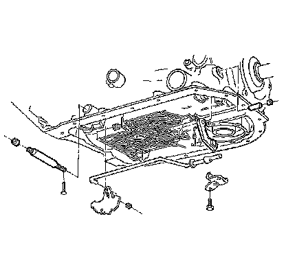

4L80-E/4L85-E - Automatic Transmission
Park Lock Pawl and Actuator Replacement
Removal Procedure

1. Remove the transmission filter.
2. Remove the park/neutral position (PNP) switch.
3. Remove the manual shaft nut and pin.
4. Remove the detent lever and actuator.
5. Remove the parking pawl bracket bolts.
6. Remove the parking pawl return spring.
7. Use the modified screw extractor in order to remove the plug.
8. Remove the parking pawl shaft retainer, shaft and pawl.
Important: If the manual shaft binds in the case during removal, file or sand the shaft in the area adjacent to the detent lever.
9. Remove the manual shaft.
10. Remove the manual shaft seal.
Installation Procedure
1. Install the pawl shaft.
2. Install the parking pawl.
3. Install the plug using a 8 mm or (5/16 inch) rod with Loctite(R) or equivalent.
4. Install the retainer.
5. Install the pawl return spring.
6. Install the detent lever to the actuator.
7. Install the actuator over the parking pawl.
8. Install the manual shaft seal.
9. Lubricate the manual shaft with transmission oil and install the manual shaft into the case.
10. Install the nut on the shaft.
11. Install the roll pin.
Notice: Refer to Fastener Notice.
12. Install the parking lock bracket bolts.
Tighten the bolts to 24 N.m (18 lb ft).
13. Install the PNP switch.
14. Install the transmission filter.
15. Fill the transmission to the proper level with Dexron(R) III transmission fluid. Refer to Transmission Fluid Checking.